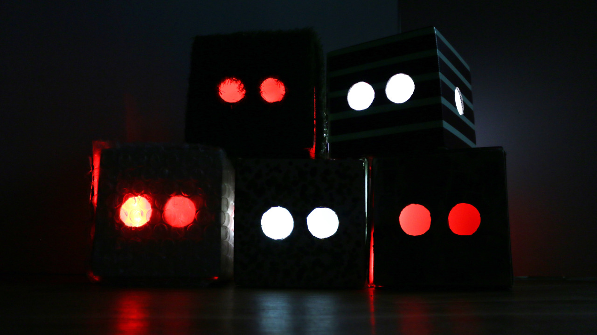
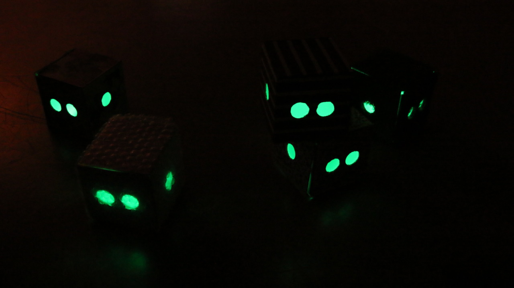
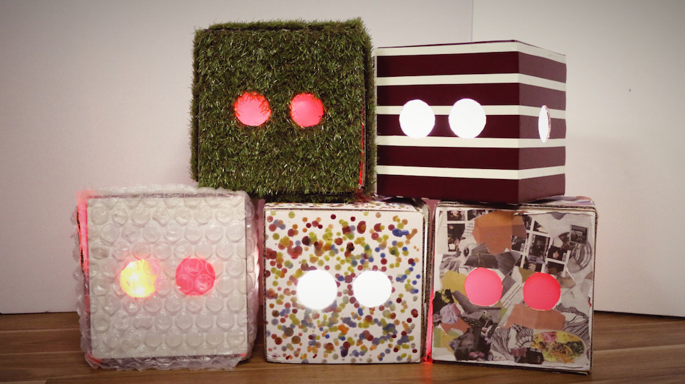
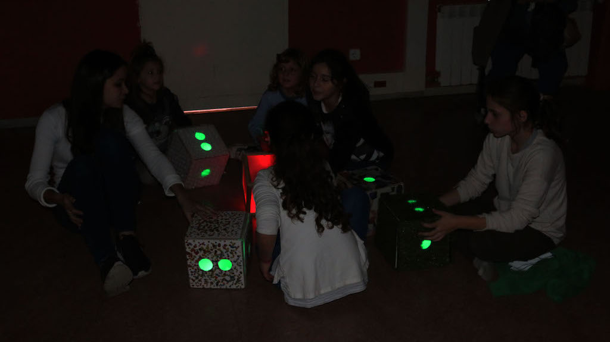
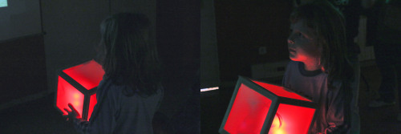
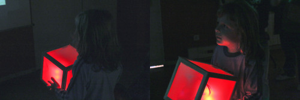

KIKUBES4KIDS
A tangible music game for children
Keywords: Design for children, play
 Kikubes4Kids is a second and different version of Kikubes. As its name explains, this version is an interactive musical game for children. The project was developed for a technology festival for children, called Linkafesta.
  This time the musical game was very simple: each cube represents an instrument in a song. Chosen at random, one of the tracks/instruments sounds off key, or distorts, also indicated by a red light. By rotating the cube and listening, the user can tune their cube’s sound after a few movements and make the instrument sound normal again. Once this is accomplished, the light turns green.  We also brought an original Kikube to the festival and created a simple game so that children understood how a smartphone’s accelerometer works, and therefore, how we detected
the cube’s rotation.
Kikubes4Kids was made with an Arduino, an accelerometer chip and a Bluetooth module for each box, along with LEDs for visual feedback.
 We also brought an original Kikube to the festival and created a simple game so that children understood how a smartphone’s accelerometer works, and therefore, how we detected
the cube’s rotation.
Kikubes4Kids was made with an Arduino, an accelerometer chip and a Bluetooth module for each box, along with LEDs for visual feedback.